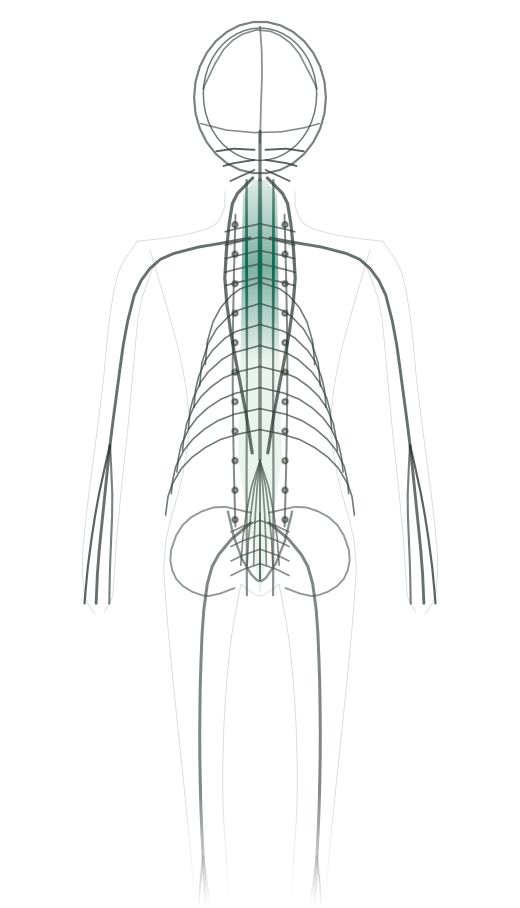
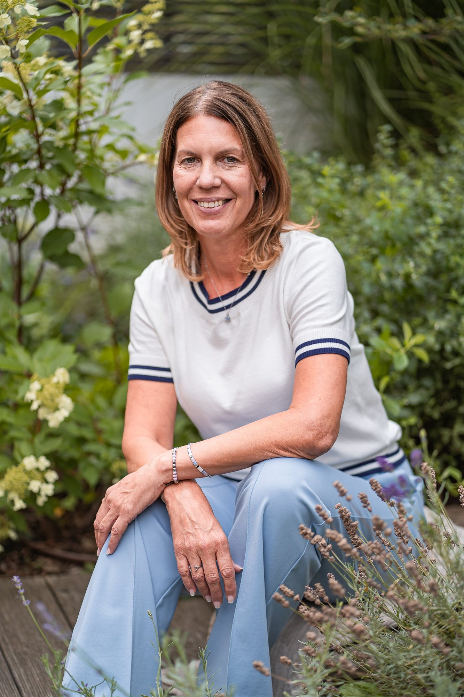

Kateřina Jüttnerová Kraniosakrální terapie
Tělo ví kudy zpět k rovnováze
Hluboká změna nepotřebuje tlak, ale čas, klid a bezpečný prostor. Dovolte své hlavě vydechnout a tělu se nadechnout.
- 75 min
- zůstáváte oblečení
- Brno

Poznáváte se?
Konkrétní obtíže, ne obecné fráze.
Najeďte na řádek nebo na něj klepněte
- tlak za okem
- ztuhlá šíje
- světloplachost
- mělký dech
- neklidný spánek
- prázdná nádrž
- návaly
- noční pocení
- mozková mlha
- bolavá pánev
- potíže s kojením
- kolika u miminka
- ztuhlý kříž
- vystřelující bolest
- slepené fascie
- sevřený hrudník
- napjaté břicho
- stálá pohotovost
- nejasné potíže
- nikam to nezapadá
- nejistota, kde začít
Nebo si nejdřív projděte, co terapie je.
Držení a puštění
Roky jste to zvládali. Nejde o to vydržet víc ani být silnější — jde o to přestat držet. Tělo nedrží napětí ze vzdoru. Drží ho proto, že to kdysi dávalo smysl. Nebezpečí dávno pominulo. Ramenům to nikdo neřekl.
Průběh sezení
Co se se mnou bude dít?
Vyberte část kola — nebo jím otočte tažením
0 → 15 min · pětina sezení
Úvodní rozhovor
Sedneme si. Beze spěchu si řekneme, s čím přicházíte a co budu dělat. Nic se nesvléká a nevyplňují se žádné formuláře.
- Co dělám já
- Ptám se, s čím přicházíte a co se dělo od minula. Vysvětlím, čeho se dotknu.
- Co děláte vy
- Řeknete, co vás trápí — klidně i to, co zní hloupě. Můžete říct, kam se dotýkat nechcete.
- Co může dělat tělo
- Ještě je v pohotovosti. To je v pořádku — teprve se rozhoduje, jestli je tu bezpečno.
15 → 65 min · dvě třetiny sezení
Ošetření na lehátku
Ležíte oblečení a přikrytí. Ruce spočinou a čekají — nejčastěji na kosti křížové nebo na hlavě. Váha doteku je asi pět gramů.
- Co dělám já
- Nic netlačím. Jen sleduji, kde se rytmus prodlužuje — a když přijde pauza, nechám ji být.
- Co děláte vy
- Nemusíte nic říkat ani dělat. Můžete usnout. Kdykoli můžete říct, ať přestanu.
- Co může dělat tělo
- Napětí, které drželo, začne povolovat — někdy po vrstvách. Může nastat still point.
65 → 75 min · závěr
Doznění a rozloučení
Nikdo vás nikam nežene. Vrátíte se vlastním tempem a pak si řekneme, co se dělo a co dává smysl dál.
- Co dělám já
- Nechávám vám čas, nikdo vás nebudí. Pak si řekneme, co dává smysl dál.
- Co děláte vy
- Ležíte, dokud potřebujete, a vstáváte pomalu. Sdílíte, co jste vnímali — nebo mlčíte.
- Co může dělat tělo
- Ukládá si, co se stalo. Bývá těžké a teplé a doznívá ještě několik dní.
- Zůstáváte oblečení. Není to masáž.
- Nemusíte nic říkat.
- Můžete usnout — je to v pořádku.
- Kdykoli můžete říct, ať přestanu.
Tempo určuje tělo, ne hodiny.

Kdo se vás dotýká
Změna nemá být tlačena — má vzniknout zevnitř.
Zdravotnické zázemí, certifikované výcviky a čas, který během ošetření nikam nespěchá. Vycházím z dlouholeté praxe zdravotní sestry, dvouletého výcviku biodynamické kraniosakrální terapie a tříletého výcviku Somatic Experiencing.
Ne technika navíc, ale jedny ruce, které vědí, co dělají.
- 5
- let výcviků
- 75
- minut jedno sezení
- 2
- metody, jeden přístup
Ceník
Transparentně, korunu po koruně.
Platíte osobně po sezení, hotově nebo převodem. Termín přesuneme zdarma, když dáte vědět alespoň 24 hodin předem. První návštěva vás k ničemu nezavazuje.
Časté otázky
Na co se ptáte před první návštěvou.
Je to masáž? Musím se svlékat?
Ne. Kraniosakrální terapie není masáž — pracuje s velmi jemným, klidným dotekem, často jen o váze mince. Celé ošetření probíhá v pohodlném oblečení, vleže na lehátku. Stačí přijít v něčem, v čem se vám dobře leží.
Kolik sezení budu potřebovat?
Je to individuální. U akutních obtíží často stačí 1–3 sezení, u dlouhodobých témat (chronické bolesti, následky stresu) se účinek prohlubuje postupně — proto nabízím zvýhodněné balíčky. Po prvním sezení si společně řekneme, co dává smysl dál. První návštěva vás k ničemu nezavazuje.
Kdy terapie vhodná není?
Ošetření odkládáme při akutním horečnatém onemocnění, čerstvém úrazu hlavy či páteře a bezprostředně po operaci. Pokud si nejste jistí, napište mi předem — společně to posoudíme, případně doporučím nejdřív návštěvu lékaře.
Je terapie vhodná pro děti a těhotné?
Ano — právě díky své jemnosti je kraniosakrální terapie vhodná pro miminka, děti i těhotné ženy. U těhotenství a u miminek se vždy nejprve krátce domluvíme na vaší konkrétní situaci.
Rezervace
Ozvěte se. Odpovím i na to, u čeho ještě nevíte, jestli se ptát.
Nejste si jistí, jestli je to pro vás? Napište mi pár řádků o své situaci — odpovím ještě před objednáním.
Zavolat
Nejrychlejší cesta. Nejlépe všední den mezi 9. a 18. hodinou — když se neozvu, jsem u klienta a zavolám zpět.
+420 776 021 297 ZavolatNapsat e-mail
Když chcete nejdřív popsat situaci nebo se na něco zeptat. Odpovím obvykle do dvou dnů.
katkajuttnerova@seznam.cz Napsat e-mailOnline rezervace
Vyberete si volný termín sami, bez telefonování.
PLACEHOLDER: Reservio / Calendly embedNež bude spuštěná, použijte prosím telefon nebo e-mail.